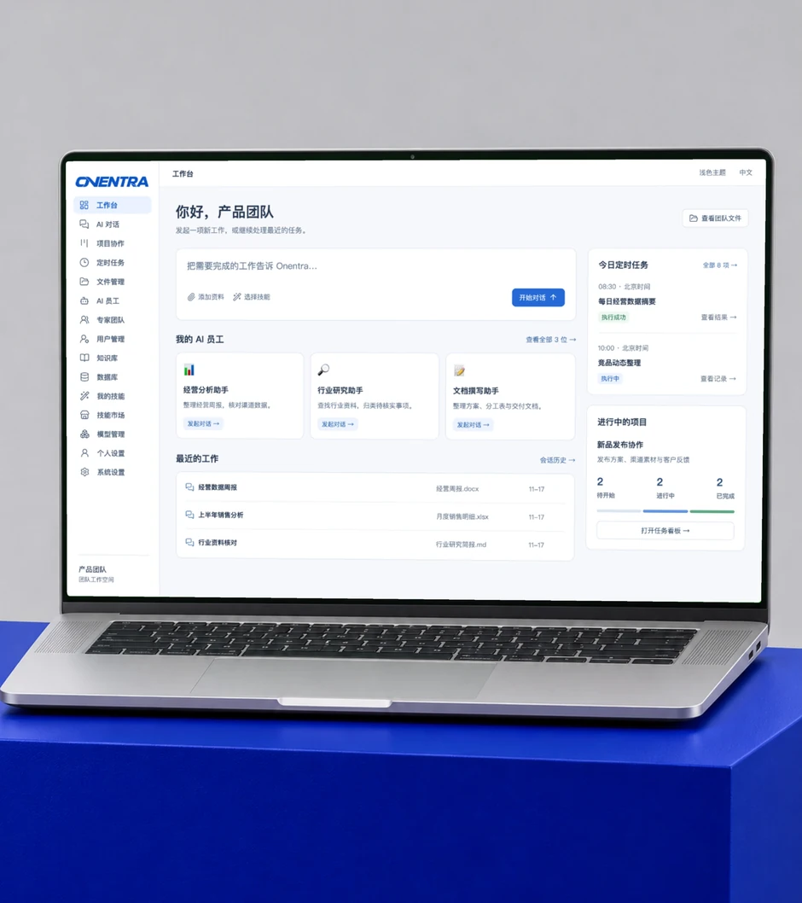

拆解业务决策
先还原用户要做的选择。选一家餐厅和选付款平台，需要的依据并不相同。
我做外卖决策和企业 AI 工作产品。在这里，可以看到我做的原型和验证过的结果。
我做过越南外卖选餐应用，也做过企业 AI 工作平台。这里记录我怎样定义需求、判断取舍，以及怎样检验一个方案能不能用。
还剩 1,000 越南盾。配送费在平台下单时核实。
Cô Ba 粉店 · 餐费 60,000 ₫
个人优势
先还原用户要做的选择。选一家餐厅和选付款平台，需要的依据并不相同。
把“推荐要准”写成可以复测的约束。缺菜单、价格未知、临时改口味，都要有处理方式。
沿着业务问题检查资料、取数和文件。能打开的表格，还要能复算其中的关键数字。
用内测反馈修正推荐，用真实生成的工作簿定位遗漏，再排后续迭代。
项目作品
先看我的职责与结果，再进入案例，沿着原型走一遍用户的任务。

桌面网页怎样让一个有预算、有忌口的人，在午休时决定吃什么、去哪点？我将选餐与平台比价拆成两个连续决策。
业务人员要交付的是一份能核对、能修改的经营周报。我从写需求、取数到交付表格，逐步检查每个环节。